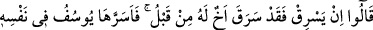
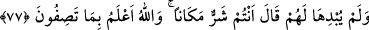

Hakk’ın Eyyûb (a.s.)’a yeminini bozmadan karısını dövebileceği bir yolu göstermek
için: “eline bir demet al!” (Sâd, 38/44) buyurması bu kabildendir. Yine Hz. İbrahim
(a.s.)’ın karısını kâfirin elinden kurtarmak için: “O benim kız kardeşimdir!” demesi de
böyledir.
Bütün şerîatlar, insanları fesâda düşmekten kurtarmak için vazedilmiş maslahat ve
yollardır. Allah Teâlâ şüphesiz, Yûsuf (a.s.)’a telkin ettiği bu hîlede büyük maslahatlar
olduğunu biliyordu. Bu sebeple mezkûr hîleyi bu maslahatları elde etmek için vesîle
kıldı. Böylece bu hîle çok güzel bir hasene haline geldi ve üzerinde çirkinlikten eser
kalmamış oldu.
“Biz kimi dilersek” yani hikmetimizin gerektirdiği ve maslahatın icâb ettiği şekliyle
yüceltmeyi dilediğimiz kişileri, Yûsuf’u yücelttiğimiz gibi “derecelerle yükseltiriz.”
İlmin birçok yüce rütbelerine erdiririz.
Mahlûkattan “Her ilim sahibinin üstünde daha iyi bilen” yani ilimde ondan daha
yüksek olan “birisi vardır.” Yâni ilim Allah Teâlâ’ya ulaşana kadar hiçbir âlim yoktur
ki ondan daha çok bilen birisi olmasın.
Mesnevî’de şöyle denilir:
El elden üstündür… Nereye kadar?
Allah’a kadar! Çünkü, en son varılacak O’dur!
Çünkü Cenâb-ı Hak, dibi ve kıyısı olmayan bir derya gibidir
Bütün denizler, O’nun huzûrunda bir selden ibârettir.
Muhammed b. Kâ‘b’dan rivâyet edildiğine göre bir adam Ali (r.a.)’a bir mesele
sordu. O da bir cevap verdi. Fakat adam: “Bunun cevabı böyle değil, şöyle olacak!”
deyince Hz. Ali:
“Haklısın ben hatâ ettim. “Her ilim sahibinin üstünde daha iyi bilen birisi vardır.”
dedi.
et-Te’vîlâtü’n-Necemiyye’de şöyle denilir: “Biz” kullarımızdan “kimi dilersek”
kendilerine rubûbiyet tevfîki sayesinde beşeriyyet derekesinden ubûdiyyet zirvesine
yükselmenin ilmini vermek sûretiyle “derecelerle yükseltiriz.” Kendisine verdiğimiz
bu yükselme ilmine sahip olan “her ilim sahibinin üstünde daha iyi bilen birisi
vardır.” O, bu bilgi sahibini yaratılmış bir ilimle yükseldiği o mertebeden, ancak kadîm
bir ilimle yükselebileceği bir dereceye yükseltip çeker. İşte bu, Allah’da Allah ile ve
Allah’a seyrdir (seyr fillah billah ilallah). Bu öyle bir kaptır ki insanlık kabı onu içine
alamaz.”